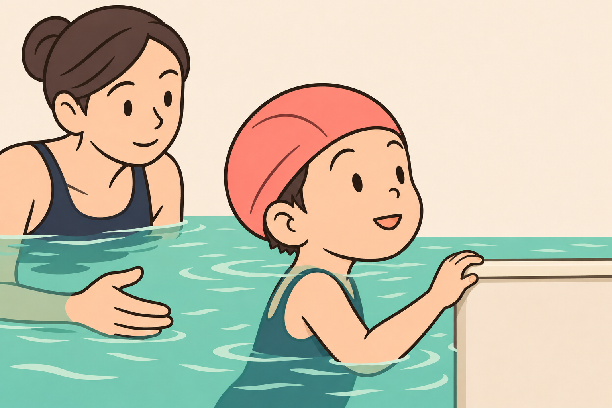
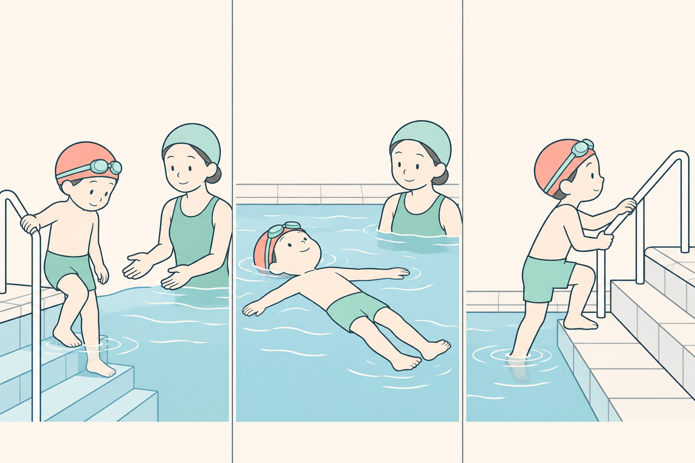
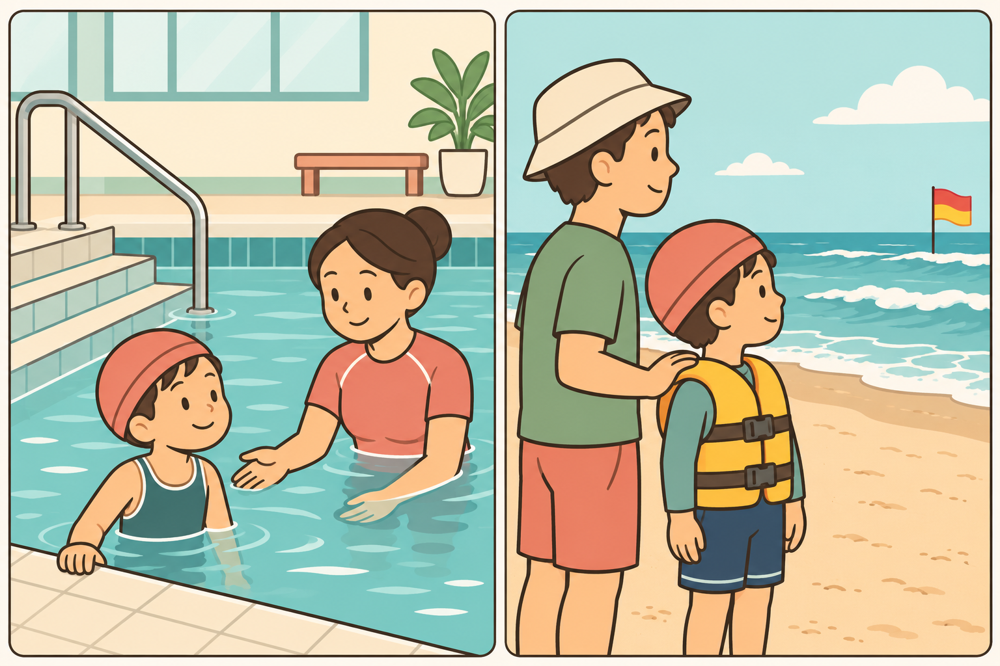
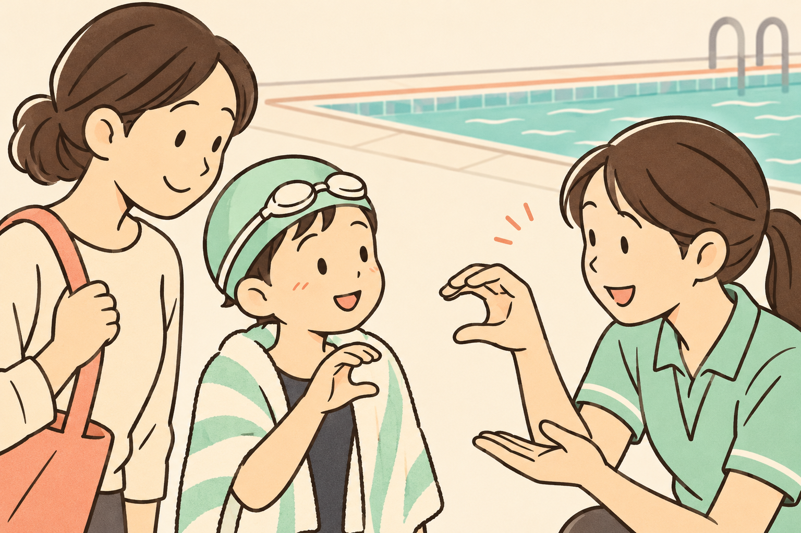

SWIMMING RESEARCH / 20
何メートル泳げた？ そのほかに何ができた？
距離の先にある、水の中の動作
2026年11月10日 公開

プールの帰り道。「今日は何メートル泳げた？」と聞くと、子どもは少し考えて、「壁まで行って、ちゃんとつかめたよ」と答えました。距離を聞いた大人と、手が壁に届いたことを覚えていた子ども。見ていたところが少し違います。これは練習を振り返るための仮の会話です。
泳いだ距離は、その日にどこまで進めたかを見る一つの目印です。ほかにも、水の中で体の向きを変える、つかまれる場所を見つける、決められた出口から上がるといった、別々の動きがあります。今日は、泳いだ距離と、水の中でできた動作を一つずつ見てみましょう。
1｜壁に着いたあと、手は何をした？
「壁まで泳げた」と聞くと、出発から壁に着くまでを思い浮かべます。では、着いた瞬間には何をしたでしょう。手を伸ばして壁の縁を握ったか。つかまったまま、先生の声がするほうに顔を向けたか。泳いだ距離が同じでも、壁に着いたあとの動きは人によって違います。
たとえば、二人が同じ場所から壁まで泳いだとします。一人は手を伸ばして壁を握り、もう一人は、そばにいた先生が手を添えてから壁を握りました。二人とも泳いだ距離は同じです。その日に何を手伝ってもらったかを添えると、次に練習する動きが見えてきます。どちらも練習の場面を考えるための仮例です。
壁に着くまでと、着いたあとの手

壁まで身体を運ぶ。
着いたあと、縁に手をかける。
見るところ壁に触れる手と、縁に掛かった指を見ます。距離とは別の動作です。
練習での使い方泳いだあとの一場面を、指導者に見てもらいます。
「手を添えてもらった」と残せば、次の先生もどこを支えれば安心かを相談できます。子どもも、「泳げた」「泳げなかった」だけでは伝えにくいことを、「ここで先生が助けてくれた」と話せます。
図では、指が壁の縁に掛かっているところを見ます。泳いで壁に着くまでと、着いたあとに握ることを分けて考えます。見学するときは、距離を数えたあと、最後の手の動きも一つ拾ってみてください。お子さんに壁の練習を追加する手順ではなく、すでに行った練習の見どころです。
泳いだ距離の先に、壁を握った手がある。
2｜入る・浮く・出る。研究ではどう見た？
小さな子どもの水泳教室を調べた研究では、教室の前後に、子どもが水の中で実際に行った動作を見ました。水に入る、背中を下にして浮く、体の向きを変える、水から出るなどを分けて記録しています。Langendorferら、2025
教室の前と後、両方で動きを見た子どもは45人です。図では、前か後のどちらかで大人の手助けなしにできた人数を、動作ごとに示します。教室の前からできた子も含むので、「教室で新しくできるようになった人数」ではありません。 その45人のうち、足から水に入る動作を示したのは38人。手助けなしで水から出る動作を示したのも38人。仰向けで手助けなしに3秒を超えて浮いたのは6人でした。三つとも、別々の動作について数えた人数です。
三つの動作を、別々に数えた

38人
6人
38人
見るところ三つの人数は、同じ45人を動作ごとに数えたもの。足し算はしません。
練習での使い方数字を合格基準にせず、その子ができた動作を聞く手がかりにします。
たとえば「入る38人」と「出る38人」は、どちらも45人をもとにした数です。この図では、同じ子が両方に入っているかまでは分かりません。38と38を足しても、人数の合計にはなりません。また、子どもは指導のある環境で評価を受けています。「手助けなし」は評価した動作の条件で、水辺で一人にしてよいという意味ではありません。
図を見るときは、何を一つずつ見たかに目を向けます。例えば、同じ子の「入れた」と「浮けた」を別々の欄に残せば、一つできたことと、次に見たいことを分けて話せます。人数が少ない動作を、誰にとっても難しい動作と決めるための図ではありません。この研究は特定の教室に通った幼い子どもの観察です。自分の子どもが何歳でできるべきか、何回習えばできるかを決める表には使えません。次のレッスンで見たい動作を一つ選ぶときに、この分け方を借りられます。
3｜水の中の動きと、水に入る前の判断
同じ子が泳ぐとしても、壁と出口が見えるプールと、波や流れがある海や川では、場所の条件が変わります。プールで壁まで泳げたという記録は、その日のプールでできたことを教えてくれます。海や川に入ってよいかは、その場所で大人が別に判断します。
Stallmanらは、水辺での安全を考える枠組みを提案しました。泳いで進む、浮く、向きを変えるといった体の動きに加えて、その場所にどんな危険があるかに気づく、自分にできることを考える、危険を避けるといった判断も含まれます。これは研究を整理して示した見取り図です。前の章のように、同じ子どもたちを実技で評価した研究とは役割が違います。Stallmanら、2017
プールと水辺で変わる、見ておくこと

壁や出口がどこかを確認する。
大人が遊泳できる場所や当日の状況を陸から確認する。
見るところプールの壁・出口と、海の波や遊泳場所を見比べます。装備も環境に合わせて変わります。
練習での使い方水辺では大人が陸から状況を確認します。プールで泳げた距離だけで判断しません。
図では、プールにある壁や階段と、水辺で大人が確かめる場所の条件に目を向けます。海や川へ出かける前なら、「今日は遊べる場所を一緒に見ておこう」「入っていい場所はどこ？」を陸の上で大人と話すきっかけにできます。場所の条件が分からないときは、陸で待つという選び方もあります。
泳げる距離が増えても、水のそばでは、見守る大人が近くで目を配り続けます。水泳教室で身につけた力と、大人の見守りは、それぞれ水辺の安全を支えます。米国CDCの水難予防案内
4｜帰り道に、できた動作を一つ話そう
次のレッスンでは、できた動作を一つだけ、実際に見えた言葉にしてみます。子どもが思い出した場面を先に聞くと、大人が見ていたところとの違いも分かります。ここで挙げる声かけは編集上の仮例です。安全の判定や、家庭で実技を試すための手順には使いません。
- 保護者から「今日は、どんなことをしたの？」
- 子どもから「壁に着いてから、先生に手を添えてもらってつかめたよ」
- 指導者から「手を添えたあと、自分で指を掛けて握れたね」
一つの動作を、見えた言葉で伝える

- 1保護者
壁に着いたとき、何をしたの？
- 2子ども
先生と壁をつかめたよ。
- 3指導者
手を添えたあと、自分で指を掛けて握れたね。
見るところ水から上がったあとの会話です。指導者の説明と子どもの言葉をつなぎます。
練習での使い方「何メートル？」のあとに、覚えている動作を一つ聞いてみます。
今日は手助けがあったなら、それも一緒に残せます。「先生がそばで手を添えたとき、壁を握れた」と言えば、その場でできたことが伝わります。次の練習をどう進めるかは、本人の様子を見た指導者と相談します。
図では、子どもが覚えている場面と、指導者が見た手の動きを結び付けて見ます。帰り道では、子どもが話した動作を一つ思い出し、「どこで」「どんな手助けで」を添えると、次の練習へ話をつなげやすくなります。保護者が見られなかった日は、「今日はどんな動きが見られましたか」と先生に聞くところから始められます。
「何メートル？」の答えに、もう一つの言葉を添える。長く泳げた日にも、距離が伸びなかった日にも、その子の手や身体がしたことを見つけられます。
まとめ｜距離を聞いたら、できた動作を一つ聞く
研究の目的 幼い子どもが水の中でどんな動作を示したかを、一つずつ評価しました。
何を見たか 教室の前と後の両方で動きを見た45人について、前か後のどちらかで手助けなしの基準を示した人数を、動作ごとに数えました。
何が分かったか 足から水に入る動作と、プールサイドに上がる動作は各38人。仰向けで3秒を超えて浮く動作は6人でした。人数は動作ごとの集計です。教室の前にできた子も含むので、教室後に新しくできた人数とは区別します。
記事の結論 泳いだ距離に加えて、壁を握る、向き直る、出口から上がるなど、その日に見えた動作も一つ言葉にして、次に見る動きを指導者と相談する、というのがこの記事の提案です。
次のレッスンでできること 子どもが覚えている場面を聞き、見えた動作を一つ伝えます。「手を添えたあと、自分で指を掛けて握れたね」
参考文献と確認範囲
- Langendorfer SJほか（2025）Evaluating water competency attainment among young children. Injury Prevention. 著者稿全文・方法、結果、表2、DOI。幼児の実技評価。図の人数は最初の調査で前後とも評価を完了した45人の集計で、各動作を前後いずれかで示した人数です。
- Stallman RK・Moran K・Quan L・Langendorfer S（2017）From Swimming Skill to Water Competence: Towards a More Inclusive Drowning Prevention Future. International Journal of Aquatic Research and Education, 10(2), Article 3. 掲載元・本文と表1。水の中での動きと水辺の判断を含む枠組みの提案です。
- 米国疾病対策センター（CDC）Preventing Drowning. 見守りの案内。水泳教室を経験した子どもへの継続した見守りを確認しました。
図中の人物・場面は説明用で、実際の研究参加者や教室の写真ではありません。仮の会話は声かけの例です。